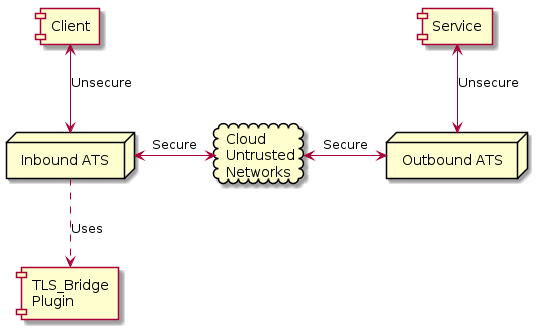

TLS Bridge¶
This plugin is used to provide secured TLS tunnels for connections between a Client and a Service via two gateway Traffic Server instances. By configuring the Traffic Server instances the level of security in the tunnel can be easily controlled for all communications across the tunnels.
Description¶
The tunnel is sustained by two instances of Traffic Server.
The inbound Traffic Server accepts a connection from the Client. This connection gets intercepted by the TLS Bridge plugin inside Traffic Server. The plugin then makes a TLS connection to the outbound Traffic Server using the configured level of security. The original request from the Client to the inbound Traffic Server is then sent to the outbound Traffic Server to create a connection from the outbound Traffic Server to the Service. After this the Client has a virtual circut to the Service and can use any TCP based communication (including TLS).
The plugin is configured with a mapping of Service names to outbound Traffic Server instances. The Service names are URLs which will in the original HTTP request made by the Client after connecting to the inbound Traffic Server. This means the FQDN for the Service is not resolved in the environment of the outbound Traffic Server and not the inbound Traffic Server.
Implementation¶
The TLS Bridge plugin uses TSHttpTxnIntercept to gain control of the inbound client session.
If the session is valid then a separate connection to the outbound Traffic Server is created using
TSHttpConnect.
After the inbound Traffic Server connects to the outound Traffic Server it sends a duplicate of the client request. This is processe by the outbound Traffic Server to connect on to the target service. After this both Traffic Server instances then tunnel data between the client and the service, in effect becoming a transparent tunnel.
For the particular use case currently planned the client will send a CONNECT which will then be
sent to the outbound Traffic Server. This will result in blind tunnels in both the inbound and outbound Traffic Server
instances giving the client a byte level secured connection to the service. Note there is no plugin
in the outbound Traffic Server - it only needs to be configured appropriately.